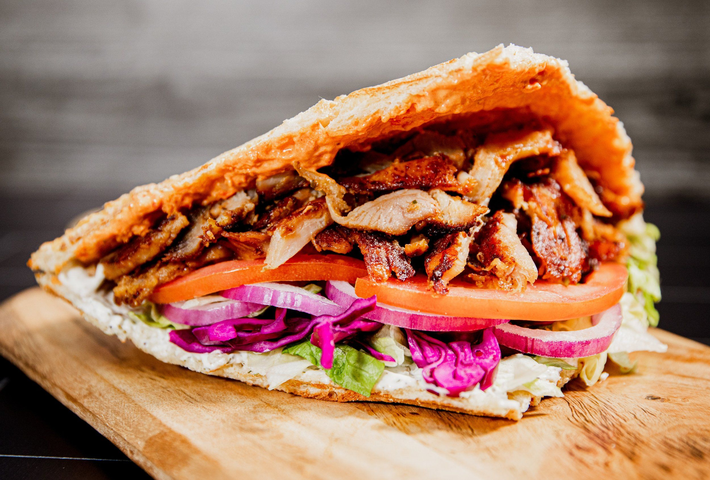
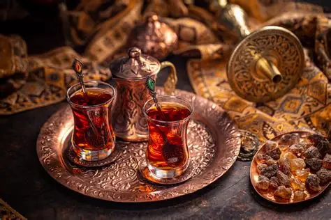
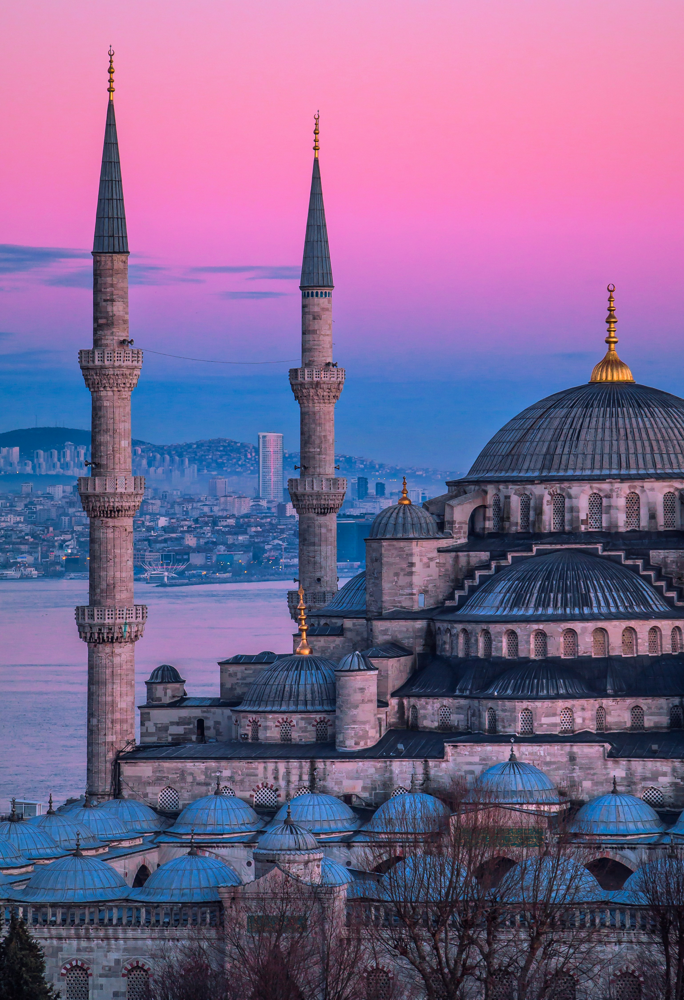
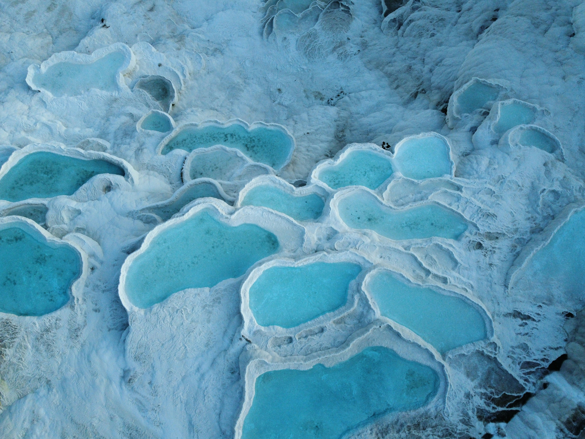

Hospitalidad
Recibir invitados y ofrecerles té o comida es una muestra tradicional de amabilidad.
Turquía es un país que conecta Europa y Asia. Es conocido por su historia, sus paisajes, sus tradiciones y su deliciosa gastronomía. Su capital es Ankara y su ciudad más conocida internacionalmente es Estambul.
La cultura turca combina tradiciones antiguas con formas de vida modernas.
Recibir invitados y ofrecerles té o comida es una muestra tradicional de amabilidad.
La música, las danzas tradicionales, las celebraciones y los mercados forman parte de su identidad cultural.
En muchos hogares es habitual quitarse los zapatos antes de entrar.
La comida turca destaca por sus sabores, especias y recetas tradicionales.

Carne preparada en un asador vertical, que suele servirse en pan o plato.

Postre elaborado con capas de masa fina, frutos secos y almíbar.

Es una bebida muy popular que suele compartirse durante reuniones y visitas.
Turquía cuenta con lugares históricos y paisajes naturales impresionantes.

Ciudad famosa por sus mezquitas, palacios y el estrecho del Bósforo.
Región conocida por sus formaciones rocosas y paseos en globo aerostático.

Lugar famoso por sus terrazas blancas formadas por aguas minerales.
El costo de vida en Turquía depende de la ciudad y del estilo de vida de cada persona.
El precio del alquiler cambia mucho entre ciudades y zonas.
Los mercados locales y restaurantes ofrecen distintas opciones de precios.
En ciudades grandes existen autobuses, tranvías, metro y otros medios públicos.